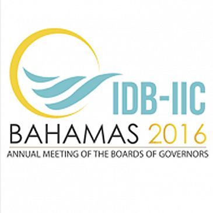

Success Stories
Learn about the past projects we have worked on and how we created the optimal IT solutions for various companies.

IDB-IIC Bahamas Conference 2016
IDB-IIC
- Developed and managed multiple Project Plans from beginning to closure along with managing a budget of 7 million dollars.
- Facilitated built out of the Infrastructure for all 190 offices for the conference along with completing sign offs based on IDB approved standards
- Successfully managed Fiber Backbone required to Connect Conference Center IDF’s for proper end to end communication.
- Provided proper project management to ensure that the required Fiber Connections for Audio/Visual Production between Master Control and respective Production Rooms for Seminars and meetings were completed in time for conference and signed off.
- Facilitated the installation of the newly purchased IPTV (CATV solution) system in conjunction with contracted IPTV vendor, cabling vendor, and cable Bahamas.
- Successfully ensured that the Air Fiber Installation was completed for network Redundancy as indicated in the country’s agreement with IDB.
ITU/Global Symposium Regulators 2017 Conference
URCA
- Successfully project managed the procurement of the required printers and copiers needed during the conference.
- Ensured that the required support staffing during the conference was procured based on the agreement signed between the government and the ITU.
- Assisted URCA and ITU technical staff with the deployment of all laptops, computers, copiers and printers to required office spaces designated based on the ITU design layout.
- Acted as liaison between URCA, ITU technical staff, Atlantis logistics, and Atlantis technical team.
- Project managed the necessary network requirements needed for the conference in conjunction with ITU technical staff, and Atlantis technical team.
- Facilitated the required cabling installations by the approved cabling vendor in all of the meeting spaces based on the approved network design layout.
- Ensured that all of the power requirements were met based on the power/network topology diagram provided in the ITU technical document.
Sky Bahamas Airlines
Sky Bahamas
- Design and Implement Network Infrastructure
- Configured Dell Power edge server for an AD environment and storage
- Configured Network switches and routers
- Configured NAS storage device for back-ups
- Ensured that all users were able to successfully login and work after migration to new office
IAAF World Relays 2015
IAAF
- Developed and managed multiple Project Plans from beginning to closure.
- Successfully expanded the fiber backbone of the National stadium to Betty K Swim Complex, and to Sir Kendal G.L. Isaacs Gym.
- Championed the final design and implementation of the expanded CATV system from 2 channels to 9.
- Properly secured the fiber and copper services providing network connectivity to the NSA ticket booths used for all events at the National Stadium.
- Successfully expanded the ubiquity Wireless foot print at the National Sporting complex to accommodate an additional 2,000 users.
- Developed and Directed deployment of all equipment through the stadium for the respective departments but also at the hotel for the required LOC and IAAF offices for the games.
- Designed Procurement plan and procedures to ensure that all inventory was returned at the completion of the event.